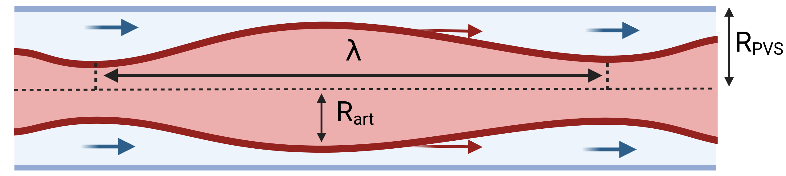

<object type="image/svg+xml" data="plots/comparisons/modelA_modelA-strongVM_modelA-PVS-disp/modelA_modelA-strongVM_modelA-PVS-disp_fta.svg" style="position:absolute;left:540px;top:688px;width:391px;height:316px;"></object>

